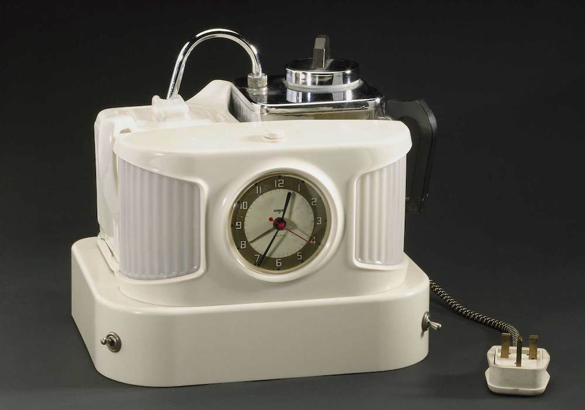
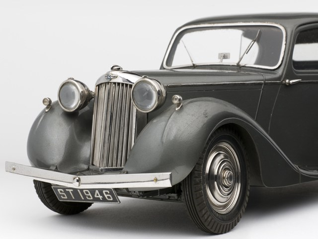
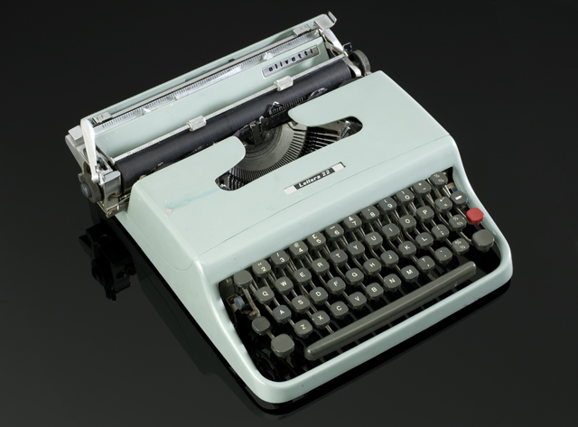

Object Wiki
- 
- 
- 
We worked with the Science Museum in London to develop a wiki to support their exhibition of objects manufactured in post-war Britain.
Via kiosks in the gallery, the wiki was available to both exhibition visitors and users online, and asked people to contribute their knowledge and memories of the objects.
The project was widely talked about in the museums community, both for its innovation and bravery in seeking curatorial collaboration with the public.
Hundreds of stories about the objects were collected, and some objects received detailed technical descriptions from outside expert amateurs.
The project no longer accepts public contributions, but is available as an archive.